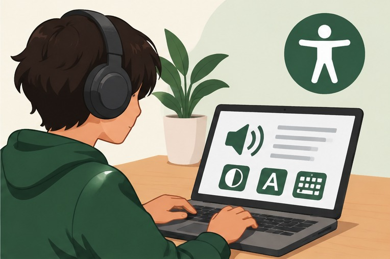

O que é acessibilidade digital?
É o cuidado para que sites, aplicativos, documentos e serviços digitais possam ser percebidos, compreendidos, navegados e utilizados pelo maior número possível de pessoas.
Boas práticas em sites
- Texto alternativo: imagens informativas devem ter uma descrição útil no atributo
alt. - Contraste adequado: texto e fundo precisam ter contraste suficiente para facilitar a leitura.
- Navegação por teclado: menus, links e botões devem funcionar sem depender do mouse.
- Estrutura semântica: títulos e regiões como
header,navemainajudam tecnologias assistivas. - Legendas e transcrições: vídeos e áudios devem oferecer alternativas ao conteúdo sonoro.
- Formulários identificados: cada campo precisa de um rótulo claro e instruções compreensíveis.
Leitores de tela
Leitores de tela são programas que interpretam o conteúdo exibido e o apresentam por voz ou por saída em braille. Uma página com títulos organizados, links descritivos e controles corretamente identificados tende a ser mais fácil de navegar com essas ferramentas.
Teste o seu site
Tente navegar usando apenas a tecla Tab, confira se o foco está visível e amplie o texto. Também é importante testar com pessoas com deficiência e utilizar ferramentas de avaliação como apoio, sem tratá-las como substitutas dos testes com usuários.
Dica: evite links vagos como “clique aqui”. Prefira textos que expliquem para onde o link leva.